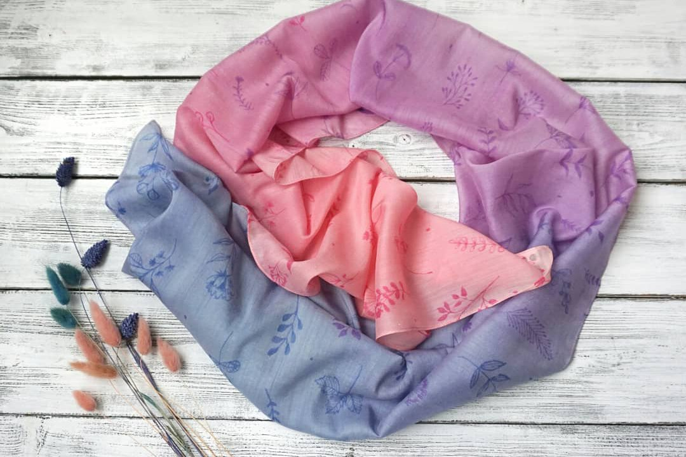

Многие творческие личности, создавшие массу шедевров на холсте, слепившие несчетное количество фигур из глины, сотворившие немало сюжетных композиций на деревянных поверхностях готовы показывать свой дар и в иных направлениях. Для одних станут интересными работы в технике скрапбукинг, другие по достоинству оценят каллиграфию, а третьи придут в восторг от батика.
Батик – обобщенный термин, предполагающий под собой несколько способов ручного рисования на различных видах тканевого материала. За основу описываемой техники взят принцип резервирования. Говоря простыми словами, на ткань наносится рисунок, контур которого покрывается резервирующим составом, препятствующим растеканию красящих веществ по поверхности основы. Благодаря такой особенности мастера создают узоры любой сложности. В качестве разделителя границ используется специальный состав закрепителя, называемый в художественном мире резервом. Основными компонентами при его изготовлении являются бензин, парафин и водная основа.
| Материалы | Техники | ||
|---|---|---|---|
| Холодный батик | Горячий батик | Свободная роспись | |
| Резерв | + | - | - |
| Воск | - | + | - |
| Соль | +- | - | + |
| Загустители | -+ | - | -+ |
Батик одновременно можно назвать и ремеслом, и искусством. Это особая техника рисования на ткани при помощи резервирующих составов. Однотонная ткань натягивается на деревянную раму и расписывается по заранее подготовленному рисунку. Это довольно тонкая и кропотливая работа, хотя не обязательно быть художником, чтобы освоить это мастерство.
Техника горячего батика используется обычно для грубых тканей. Резервирующий состав в данном случае состоит из воска или парафина и наносится на ткань в горячем виде, после того как рисунок готов, резервирующий состав снимается. Горячий батик подразумевает многослойную покраску ткани, поэтому изображения получаются более размытые и в них нет четко прорисованных границ.
Холодный батик — самый частый способ росписи шелка. В отличие от горячего, резервирующий состав не нагревается перед нанесением. Прежде чем начинать роспись, границы рисунка обводятся резервирующим составом, который можно купить в художественном магазине. Эта техника считается наиболее подходящей для новичков и напоминает чем-то детскую раскраску. Для росписи ткани в холодной технике требуется намного меньше материалов и дополнительных приспособлений.
https://vplate.ru/hobbi/batik/